Essentially, I have built many different parts to rasterize more and more complicated images using harder and complex techniques. Initially, I started Task 1 simple by getting minimum and maximum x and y values to form a bounding box. In turn, this would shrink the size of which coordinates to check to only within reasonable bounds. Because I created the bounding box before checking, I created something similar to an algorithm that would check every sample in a box.
In Task 2, I learned how to apply supersampling, which is a technique that has high memory and speed usage, but amazing for antialiasing. I implemented numerous functions from the original method of rasterization to the new and improved version. A supersample rate of 1 is similar to the normal sample rate, and the higher the supersample rate the better the antialiasing. Essentially, it gives the image a more smooth look when rasterized.
Task 3 taught me about transforms and how to encode them using the functions provided in class. Scale, rotate, and translate all had different functions needed to implement in order to work properly. By playing around with each function, I managed to create a fun image using translation and rotation.
Moving on to Task 4, I got the hang of barycentric coordinates. By taking three different points on a triangle and then converging their colors at a point, you end up with a gradient, as each point within a triangle represented a different color based on the distance from each point. Using this, I ended up with a circle gradient after applying the functions necessary, building off of Task 2.
Task 5 taught me how to implement pixel sampling for textures. Pixel sampling chooses a color based off of the texture provided; I applied this through conversion of texture coordinates to the corresponding pixels. Nearest sampling takes the closest texel provided and uses that for the pixel, while milinear sampling takes the average of the 4 closest texels to blend the colors. Rasterizing the triangle was similar to Task 4, except it would call upon texture mapping functions.
Finally, for Task 6, I learned level sampling. This sampling chooses a specific mipmap level to use. It takes a lower resolution and uses that to sample instead of the original resolution to help with speed and memory. I calculated how fast the texture coordinates would change in between pixels, getting UV coordinates for every position, as well as one to the right and one down. After calculating the differences between each of the coordinates, I would scale it up to match the actual resolution of the image. After doing all of this, I reflected on how each kind of sampling differed based on memory usage, speed, and antialiasing.
I found it interesting seeing how different yet similar these applications of rasterization were. I figured they would be quite different, as each of them have their own unique way of sampling from the image or texture provided, but I found that there was plenty of overlap between the rasterizations. I also appreciated the different ways to apply the functions we learned in class into the code to see how it unfolded. Even when making insane errors that would result in completely wrong colors showing up, it gave me a baseline understanding of how to code graphics through different methods.
I rasterized triangles by first computing the bounding box. I took the minimum x and y coordinates as well as the maximum x and y coordinates to get the smallest space that would fit the whole triangle. Out of the three values, I choose the biggest or smallest and then compare it to either 0 or the width/height depending on the value I am looking for.
For all of the pixels within the bounds, I would calculate the side that the sample point is on. Once I figure out where the values are located, I check to see if the point is within the triangle. If all three are positive OR if all three points are negative, then the sample is inside of the triangle. I do it for both positive and negative in case the vertices are given clockwise or counterclockwise. I fill in the pixel as a result.
By calculating the values of the bounding box before filling in pixels, I guarantee that this is no worse than an algorithm that checks every sample within the bounding box. The algorithm I made is similar to the one its being compared to, so they are equal. By taking the values before, I can shrink the loop to only check what values I want it to check within the smallest rectangle.
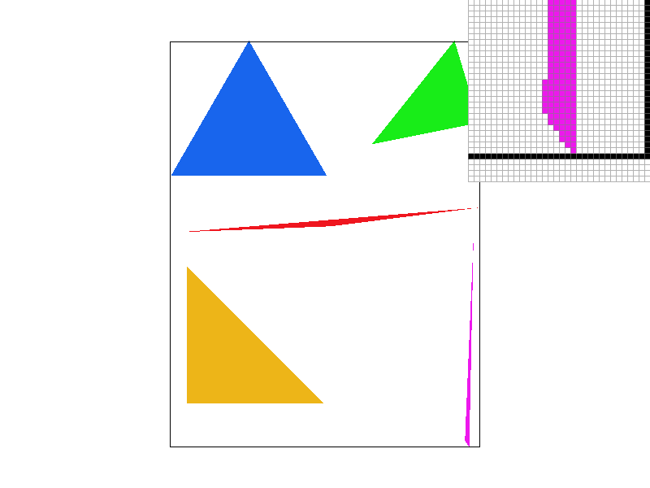
Supersampling is useful because it gets rid of aliasing, which shows up as appearing more jagged instead of smooth. Supersampling helps with this by sampling multiple times to find the ideal pixel color. This makes some of the pixels more faded and highlight more of gradient rather than simply using one color for every pixel.
To implement this, I used the provided sample_buffer that stores a Color value for each sample, so the sampling size becomes width * height * sample_rate, adding on the rate to account for supersampling. For each pixel, I looped over every subsample and calculate the location of each one. Instead of just adding 0.5, I would get the center of each subsample instead by adding the sub_x as well.
Going down the line, I changed fill_pixel() so that the supersamples for points and lines still color with the same color. Since this function isn't used for rasterizing the triangle, this change is okay. Speaking of, for rasterize_triangle, it changed from task 1 by testing the subsamples instead of the pixels.
For both set_sample_rate and set_framebuffer_target, I simply changed the resize to account for the sample rate, not just the width and height. Finally, for resolve_to_framebuffer, this function simply changes the supersampled picture into the framebuffer. The code essentially averages the colors of the samples and then converts the color into a mix of the sampled colors.
|
|
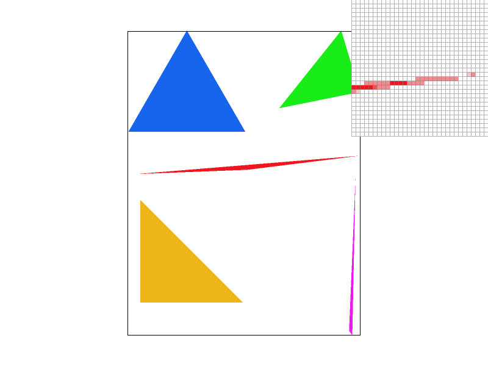 |
|
|
Essentially, the more that the sample rate increases, the more "smooth" an image looks. The sample rate of 1 acts like Task 1 did. Sample rate of 4 increases the accuracy a bit by taking a 2x2 grid instead of just the pixel, and it continues on from there. |
I wanted the new robot to do the wave, so I rotated the arms and translated them a little for them to connect better. I also changed the colors and rotated the head back to its original position to resemble Minecraft Steve because I was feeling nostalgic.
|
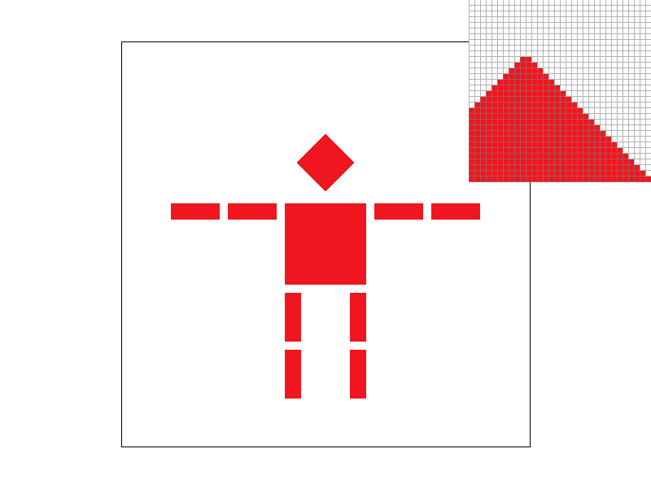 |
|
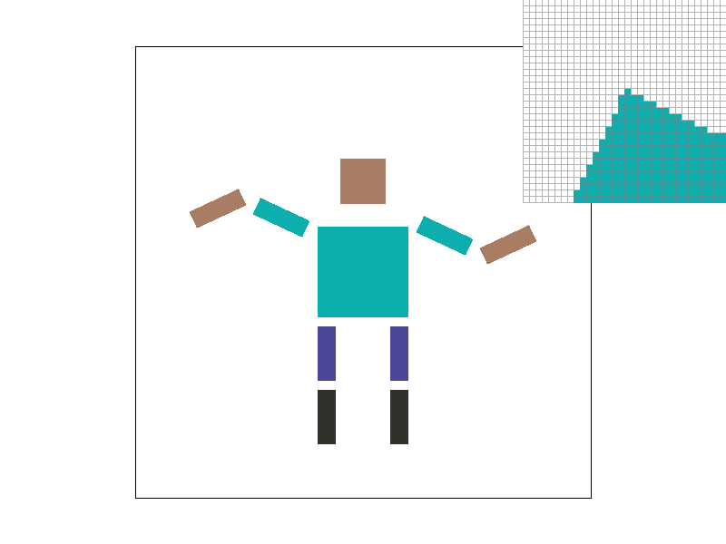 |
Barycentric coordinates describe a point in relation to vertices of a triangle. Instead of using x and y, there are three different colors on each vertex of a triangle. These three vertices are alpha, beta, and gamma, and they always add up to 1. Each one has its own calculations, but once you figure out two of them, you can simply subtract them from 1. With these weights, they create a smooth gradient throughout the triangle, because each point weighs the vertices differently.
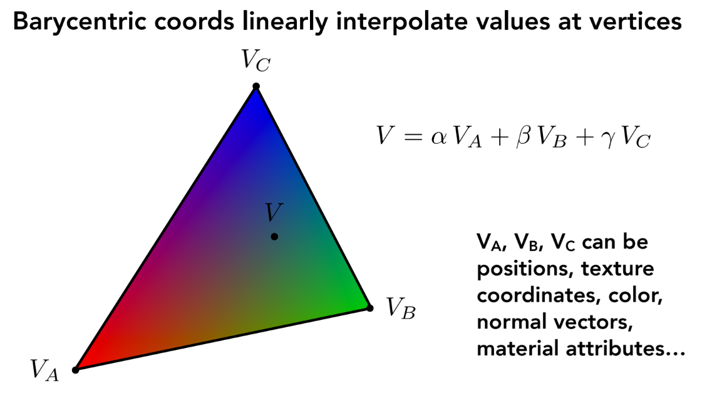
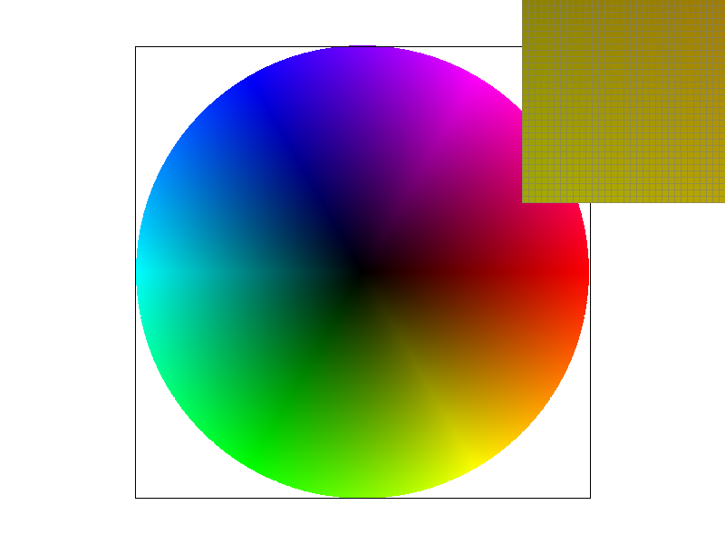
Pixel sampling decides what color a pixel should be when a texture is mapped onto a certain point. For both nearest and bilinear sampling, I converted the texture coordinates into the corresponding pixels and then used them to decide the color.
Nearest sampling simply gets the texture coordinates and maps them to the closest texel provided, returning the color. Bilinear sampling, on the other hand, takes the 4 nearest texels and blends their colors by getting the average to have more of a gradient feel.
To rasterize the textured triangle, the format is very similar to Task 4, but calls on the texture mapping formats and then returns based on which one is used. I still store into the sample buffer and use alpha, beta, and gamma as barycentric coordinates to determine whether to color pixels.
|
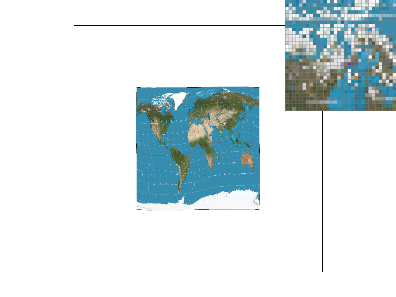 |
|
|
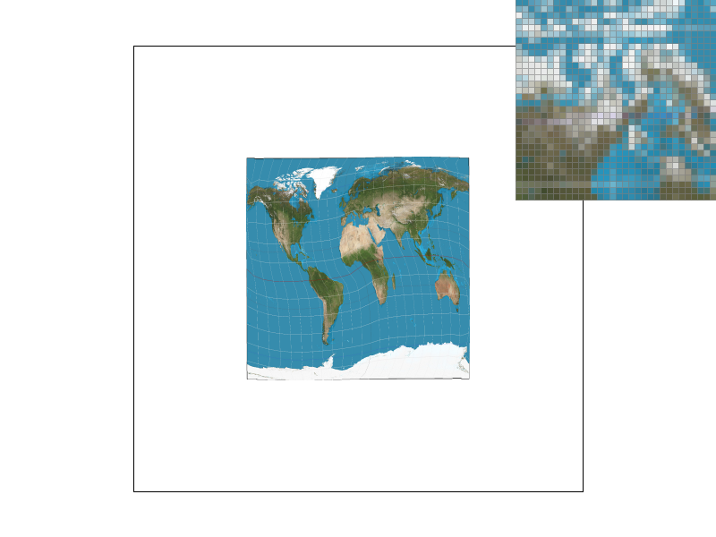 |
|
Nearest sampling seems to take on more of a simpler approach, as shown by the jagged edges and the struggle to define smaller pieces of an image. Bilinear is the opposite; having more samples to pull from makes it easier to see images become smooth and transition nicely.
There will be a large difference when looking at nearest vs. bilinear sampling with a sample rate of 1. Because this is the primitive state, we can see most of the differences because supersampling doesn't affect anything yet. As seen in the sample rate of 16, the images are almost similar, and it is harder to tell the difference between nearest and bilinear sampling. Supersampling takes over regardless of the method and smooths everything out, so it is better to use a lower sampling rate to compare.
Level sampling essentially chooses which mipmap level to use. Mipmaps are smaller than the original texture, so texture sampling can take from a lower resolution when the pixels on the screen are too detailed to pull from properly.
I essentially calculate how fast texture coordinates change between pixels. I get the UV coordinates in each position as well as one to the right and one downward. Calculating these gets the differences between coordinates and then scaling it to the width and height of the actual texture. L_ZERO takes from the original, L_NEAREST rounds to the nearest available level, and L_LINEAR acts as an interpolation between neighboring mipmaps.
Pixel sampling has low memory usage and typically pretty fast, but there are better options specifically for antialiasing. Level sampling is also pretty fast, but takes up more memory compared to pixel sampling. Antialiasing is much better specifically for textures. Supersampling is the slowest of the three and takes up a lot of memory usage. The best part of supersampling is that its antialiasing is stellar compared to the other two.
|
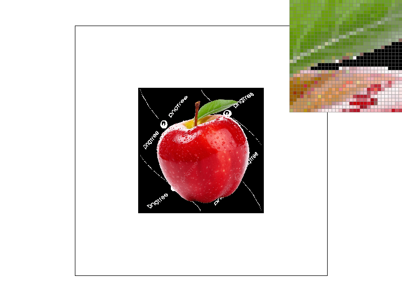 |
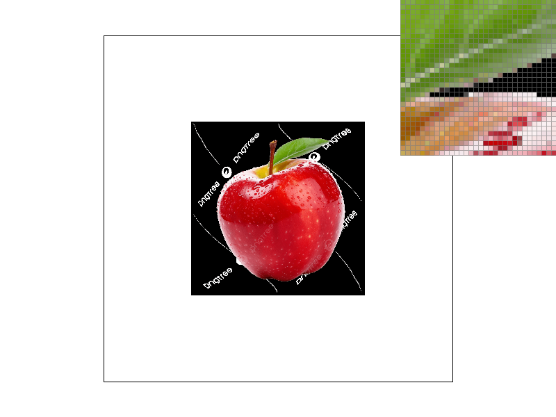 |
|
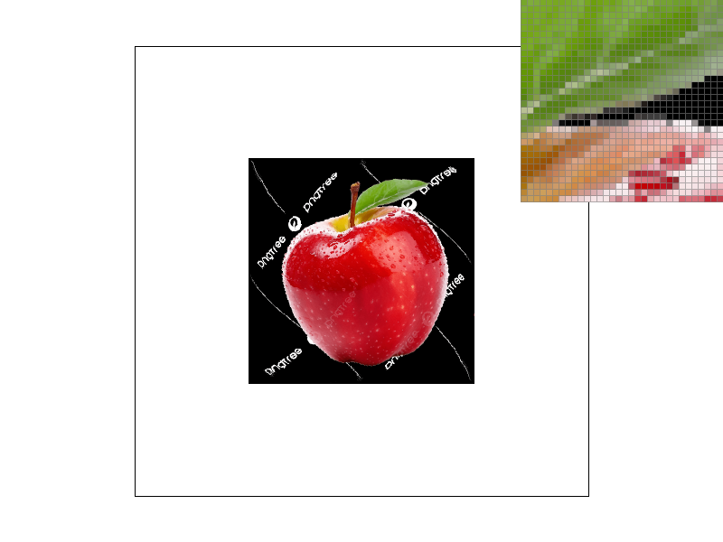 |
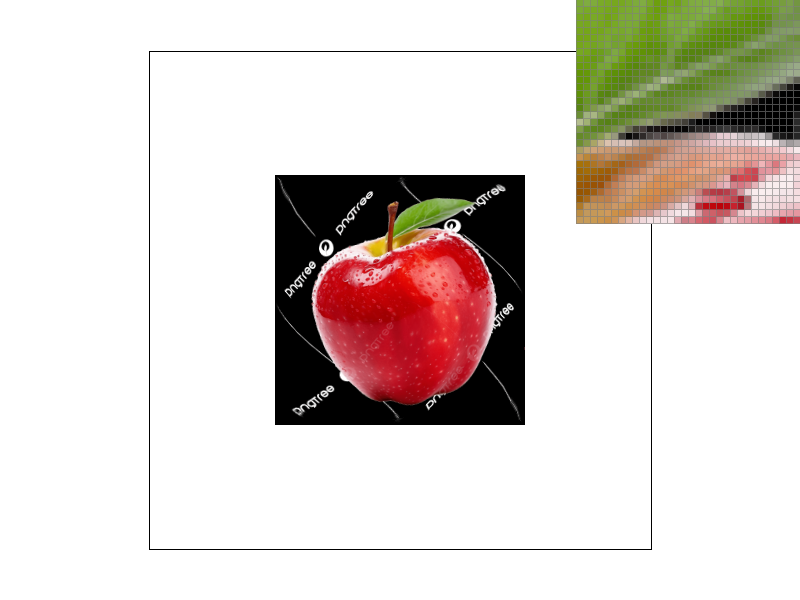 |